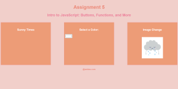
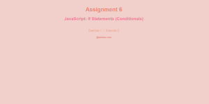

- Assignment 4 - Recreate CSS
This assignment demonstrates my knowledge of CSS and flex by being able to recreate any web page given to me. I use many techniques in CSS such as ::after, flex, relative and absolute positions, etc.
- Assignment 5 - JavaScript Intro
This assignment shows my newfound knowledge of JavaScript, specifically in using arrow functions, constants, and more. I use a script file to define functions for specific events like clicking page elements.
- Assignment 6 - JavaScript Conditionals
This assignment displays my knowledge of JavaScript conditionals by utilizing intervals, the Date class, sliders, and more to display differing information based on each condition.